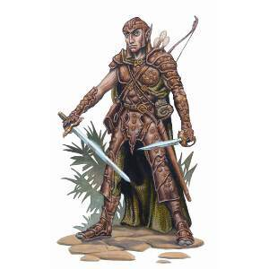
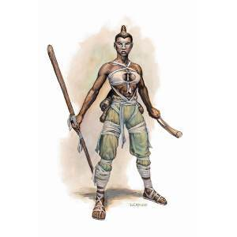

CLASSES
O Livro do Jogador de D&D recém-traduzido pela Galápagos traz 12 classes de personagens para
que os jogadores possam escolher com o que eles desejam jogar. Essas classes representam um
estereótipo, ou melhor, algo como uma profissão dentro do jogo (o Livro do Jogador fala
nelas como uma vocação, pois além de suas habilidades ela também ajuda a definir um pouco a
forma como seu personagem vê o mundo.). Elas possuem habilidades e conceitos próprios para
diferenciá-las umas das outras. E o que vamos fazer aqui é explicar essas diferenças
conceituais para que você se sinta mais preparado para escolher com qual classe deseja
jogar.
Bárbaro
ao ver uma porta trancada, um ladino pode passar horas tentando destrancala, um mago pode tentar usar magias
para teleporatar-se ao outro lado, mas o barbaro não usa metodos tão demorados e complexos
se um barbaro ve uma porta...
O BARBARO QUEBRA A PAREDE PRA NÃO TER QUE PASSAR POR ELA
como um barbaro poucos poderam se quer fazer um arranhão em voce e quando eles conseguirem voce podera
devastar todos com a sua FURIA
Bardo
Bárbaro
A mais carismatica das classes, o bardo sempre ando ao lado de seus instrumentos musicais para inspirar
seus companheiros, aterrorizar seus inimigos e galantear os decendentes de taverneiros
um bardoé um usuario de magia que estudou um pouco de tudo, "seus conhecimentos tem
a vastidão de um oceano mas com a profundidade de uma poça"
ao jogar com um bardo voce estara disposto a nunca bater diretamente em batalhas e apenas ser um suporte,
mas fora de batalha voce mostrara seu verdadeiro potencial e tambem podera tocar musicas, sempre fazendo
cenas se tornarem mais memoraveis
Bruxo
Bruxos são um tipo específico de conjurador, com funcionamento próprio e diferente das demais
classes do jogo, capazes de causar poderosos ataques a distância com seus raios, e de usar de
poderes vindo de seu pacto com criaturas antigas e misteriosas.
Normalmente com uma historia tragica por tras, voce sempre estara a beira de um colpaso,
brimcando com forças que aos poucos irão te corromper
Se voce gosta de ser constantemente atormentado por criaturas do abismo para ganhar poder,
o bruxo é a escolha certa
Clérigo
Clérigos são conjuradores que recebem suas magias através de preces à divindade a qual veneram.
Sua fé e devoção pela divindade são recompensados com poderes especiais e o clérigo não só segue
os preceitos da divindade como a representam e espalham sua palavra no mundo. Clérigos tem uma
relação íntima com a hierarquia religiosa, ainda que possam ser errantes e não desejar fazer
“carreira” dentro da igreja.
Druida
Druidas são conjuradores de magia intimamente ligados as forças elementais da natureza,
incluindo animais e plantas, além de algumas fadas e outras criaturas ligadas a vida natural.
Druidas são o braço ativo do mundo selvagem perante o mundo. Em alguns cenários, essa ligação
com a natureza se faz através de divindades ligadas a ela, mas de uma forma não estrutural,
eclesiástica e hierárquica como uma igreja a qual um clérigo seria ligado.
Seu druida pode ser um eremita, um combatente selvagem, um caçador, um defensor da natureza, um
explorador, um guia espiritual, um espião de muitas formas, um investigador primitivo, um
rastreador, um batedor, um diplomata natural, entre tantas outras opções que uma classe versátil
e poderosa possibilita.
Feiticeiro
A magia da adivinhação é mais que apenas vislumbrar o futuro – embora essa seja uma parte
Feiticeiros são conjuradores que trazem em seu sangue ligações de seus antepassados com
criaturas mágicas, ou de algum evento sobrenatural que acabaram por lhe conceder grandes
poderes. Esse legado é concedido a um feiticeiro, que não escolhe sê-lo e sim é “escolhido”
pelos eventos de seu passado ou do passado de sua família.

Guardião
Guardiões são combatentes e incansáveis vigilantes das áreas inexploradas e do mundo selvagem.
Usando principalmente de suas habilidades de combate, mas também possuindo uma pequena
capacidade de conjuração, ligada a natureza, que pode ser potencialmente útil em diversas
situações, guardiões se especializam em caçar monstros que ameaçam a civilização, seja ela qual
for. São rastreadores, patrulheiros e caçadores. Apesar de muitos possuírem uma natureza
independente, eles se aliam a grupos de aventureiros dando suporte na sobrevivência e travessia
do mundo natural, e buscam nessas alianças suporte para sua guerra pessoal contra os inimigos da
civilização.
Guerreiro
Guerreiros são combatentes mestres em técnicas de combate. Se um bárbaro usa a força e a fúria,
um guardião usa seu conhecimento do terreno e de seu inimigo e um paladino usa a força de sua
convicção e sua fé, um guerreiro usa seu conhecimento em técnicas de combate, seu domínio
incomparável em armas e armaduras e sua incrível perícia na arte da guerra.
Seu guerreiro pode ser um cavaleiro, um gladiador, um soldado de elite, um mercenário, um
caçador de recompensas, um bandido foragido, um defensor de sua terra, um caçador de aventuras,
um nobre sem terras, entre tantas outras opções.
Ladino
Ladinos são mestres em perícias e usos de ferramentas, com grande versatilidade de habilidades
mundanas (e algumas sobrenaturais) para buscar, através de furtividade e sagacidade, atingir
seus objetivos e também os pontos fracos daqueles que se colocam entre o objetivo e o ladino.
Seu ladino pode ser um espião, um diplomata, um jogador, um batedor, um chaveiro, um
investigador, um caçador de recompensas, um vigarista, um pirata, um espadachim, um arqueiro, um
assassino, um ladrão, um acrobata, um falsificador, um guia, um caçador de tesouros, um
colecionador, entre tantas outras opções oferecidas por uma classe extremamente versátil.
Mago
Magos são conjuradores estudiosos, que buscam o conhecimento da magia e do sobrenatural, além de
conhecimentos mundanos. Se o feiticeiro nasce com o poder arcano e o bruxo faz um pacto por este
poder, magos usam de seus estudos sobre a Arte para melhor manejá-la e, segundo eles próprios, o
fazem melhor do que ninguém.
Como os maiores estudiosos da magia, os magos possuem a maior quantidade de magias disponíveis
entre todas as classes, fazendo com que um mago seja potencialmente o mais versátil e poderoso
conjurador. cada mago é capaz de estudar mais afundo uma das oito escolas de magia do multiverso: Abjuração,
Adivinhação, Encantamento, Evocação, Ilusão, Invocação, Necromancia e Transmutação.
